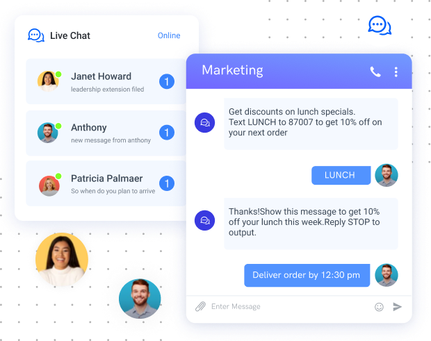
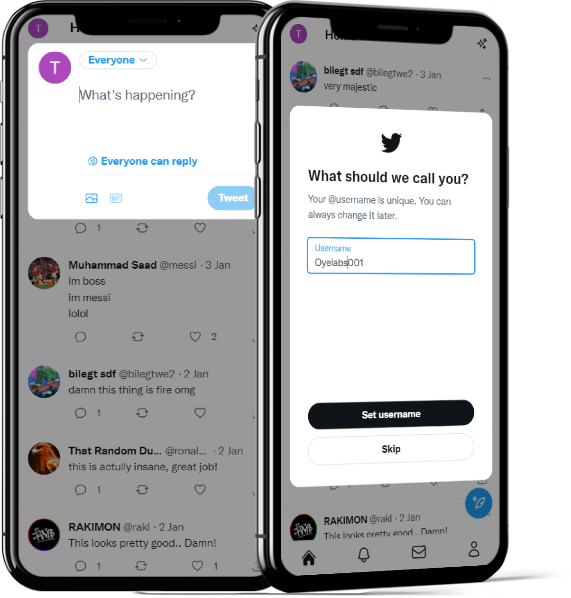
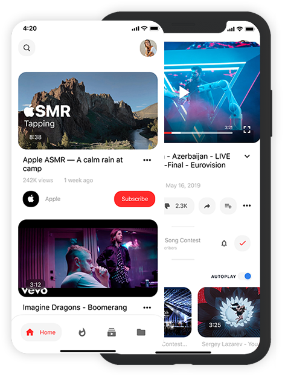
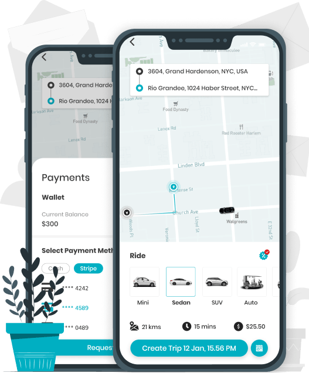
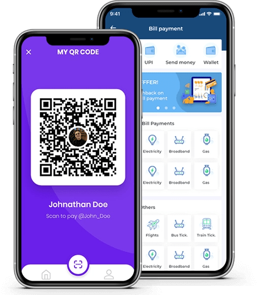

CoinsQ University
All Over World Blockchain
University Launching 125+
Countries CoinsQ University
Launching a blockchain university like CoinsQ University in over 125
countries can bring several benefits to students, academia, and the
global education landscape. Here are some key advantages of an
all-over-world blockchain university:
Global Accessibility:
By launching the university in over 125
countries, CoinsQ University can provide educational
opportunities to a wide range of students across the globe. It
breaks down geographic barriers and allows individuals from
diverse backgrounds to access quality education in blockchain
and related fields.
Specialized Curriculum: CoinsQ University can offer a specialized
curriculum focused on blockchain technology, cryptocurrencies,
smart contracts, decentralized applications, and related
subjects. Students can gain in-depth knowledge and skills in
these emerging fields, positioning themselves for exciting career
opportunities in the blockchain industry.
Expert Faculty: The university can attract renowned experts,
researchers, and professionals in the blockchain domain to serve
as faculty members. Students will have the opportunity to learn
from experienced practitioners who can provide valuable insights
and practical knowledge.
Industry Partnerships: CoinsQ University can establish
collaborations and partnerships with leading blockchain
companies, startups, and industry players worldwide. These
partnerships can facilitate internships, research collaborations,
and guest lectures, exposing students to real-world applications
and enhancing their employability.
Cutting-edge Research: The university can foster a researchfocused environment, encouraging faculty and students to
conduct innovative research in blockchain technology. This can
contribute to advancements in the field, leading to new
discoveries, frameworks, and best practices.
Global Networking Opportunities: By bringing together students
from various countries, CoinsQ University can create a diverse
and vibrant learning community. Students can connect with
peers, industry professionals, and thought leaders from around
the world, building valuable networks and collaborations.
Industry-Relevant Skills: The curriculum can be designed to equip
students with practical skills that align with industry needs. This
ensures that graduates possess the knowledge and capabilities
sought after by blockchain companies, enhancing their
employability and career prospects.
Blockchain Incubation and Startups: CoinsQ University can foster
a culture of entrepreneurship and innovation, encouraging
students to develop their own blockchain-based startups. The
university can provide resources, mentorship, and access to
funding opportunities, nurturing the next generation of
blockchain entrepreneurs.
Lifelong Learning and Continuing Education: CoinsQ University
can offer continuing education programs and professional
development courses to cater to the evolving needs of
professionals in the blockchain industry. This promotes lifelong
learning and enables individuals to stay updated with the latest
advancements in the field.
Contribution to the Blockchain Ecosystem: By launching an allover-world blockchain university, CoinsQ University can
contribute to the growth and development of the global
blockchain ecosystem. It can nurture talent, promote research,and drive innovation, ultimately advancing the adoption and
understanding of blockchain technology worldwide.
The launch of CoinsQ University in over 125 countries can create a
transformative educational platform for blockchain enthusiasts. It
can empower students with specialized knowledge, foster global
collaboration, and contribute to the growth of the blockchain
industry on a global scale.

Sqchat
introducing utility-based decentralized social media applications
like Sqchat can offer several benefits to users and the broader social
media landscape. Here are some key advantages of a utility-based
decentralized Sqchat:
Data Privacy and Control: Decentralized social media platforms
prioritize user data privacy and give users more control over their
personal information. With a decentralized architecture, user
data is stored on distributed networks, reducing the risk of
centralized data breaches and unauthorized access by third
parties.
Censorship Resistance: By leveraging decentralized
technologies like blockchain, a decentralized Sqchat can resist
censorship and ensure freedom of expression. Content
moderation can be decentralized, allowing the community to
participate in decision-making processes rather than relying on
centralized entities.
Transparent Algorithms: Decentralized social media platforms
can implement transparent algorithms for content curation and
recommendation systems. Users can have visibility into how
algorithms work, reducing the opacity and potential biases
associated with centralized platforms.
Tokenized Incentives: Utility-based decentralized Sqchat
platforms can introduce tokens that incentivize user engagement
and content creation. Users can earn tokens for their
contributions, such as posting quality content, engaging with
others, or participating in platform governance. These tokens can
be traded or used within the platform's ecosystem.
Community Governance: Decentralized Sqchat platforms can
enable community-driven governance mechanisms where users
have a say in platform rules, content policies, and feature
development. Decisions can be made through decentralized
voting systems, ensuring a more democratic and inclusive
approach to platform management.
Monetization Opportunities: Decentralized social media platforms
can offer new monetization opportunities for content creators.
Through tokenization, users can directly monetize their content,
receive tips from followers, or participate inrevenue-sharing
models. This allows creators to have greater control over their
monetization strategies.
Interoperability and Portability: A decentralized Sqchat can
enable interoperability and data portability, allowing users to
seamlessly connect with other decentralized platforms and take
their data with them. This reduces lock-in effects and empowers
users to switch platforms without losing their connections and
content.
Reduced Advertiser Dominance: In a decentralized Sqchat,
advertising models can be reimagined. Instead of relying solely
on targeted ads, platforms can explore innovative ways for users
to interact with brands and advertisers, such as opt-in
advertising, sponsored content, or product placement, ensuring a
more balanced and less intrusive advertising experience.
Resilience and Fault Tolerance: Decentralized social media
platforms are more resilient to failures or attacks due to their
distributed nature. There is no single point of failure, making the
platform more robust and resistant to downtime, ensuring
uninterrupted access for users.
Enhanced User Trust and Engagement: By addressing issues
related to data privacy, censorship, and algorithm transparency,
a utility-based decentralized Sqchat canfoster greater user trust.
Users can feel more confident in sharing their content, engaging
with others, and building meaningful connections within a more
transparent and user-centric environment.
Introducing a utility-based decentralized Sqchat can revolutionize
the social media landscape by offering users greater control over
their data, fostering community governance, and creating new
monetization opportunities. These benefits can lead to a more usercentric, transparent, and engaging social media experience.

Sqtwee
Introducing a utility-based decentralized social media tweet
application like SQTWEE can provide several benefits to users and
the broader social media landscape. Here are some key advantages
of a utility-based decentralized tweet application:
Data Privacy and Control: Decentralized tweet applications
prioritize user data privacy and give users more control over their
personal information. With a decentralized architecture, user
data is stored on distributed networks, reducing the risk of
centralized data breaches and unauthorized access by third
parties.
Censorship Resistance: By leveraging decentralized
technologies like blockchain, a decentralized tweet application
can resist censorship and ensure freedom of expression. Content
moderation can be decentralized, allowing the community to
participate in decision-making processes rather than relying on
centralized entities.
Transparent Algorithms: Decentralized tweet applications can
implement transparent algorithms for content curation and
recommendation systems. Users can have visibility into how
algorithms work, reducing the opacity and potential biases
associated with centralized platforms.
Tokenized Incentives: Utility-based decentralized tweet
applications can introduce tokens that incentivize user
engagement and content creation. Users can earn tokens for
their tweets, retweets, likes, and participation in platform
governance. These tokens can be traded or used within the
platform's ecosystem.
Community Governance: Decentralized tweet applications can
enable community-driven governance mechanisms where users
Monetization Opportunities: Decentralized tweet applications can
offer new monetization opportunities for content creators.
Through tokenization, users can directly monetize their tweets,
build subscriptions, receive tips from followers, or participate in
revenue-sharing models. This allows creators to have greater
control over their monetization strategies.
Interoperability and Portability: A decentralized tweet application
can enable interoperability and data portability, allowing users to
seamlessly connect with other decentralized platforms and take
their data with them. This reduces lock-in effects and empowers
users to switch platforms without losing their connections and
content.
Enhanced User Trust and Engagement: By addressing issues
related to data privacy, censorship, and algorithm transparency,
a utility-based decentralized tweet application can foster greater
user trust. Users can feel more confident in expressing their
thoughts, engaging with others, and building meaningful
connections within a more transparent and user-centric
environment.
Resilience and Fault Tolerance: Decentralized tweet applications
are more resilient to failures or attacks due to their distributed
nature. There is no single point of failure, making the platform
more robust and resistant to downtime, ensuring uninterrupted
access for users.
Real-time Communication: Utility-based decentralized tweet
applications can provide real-time communication and instant
updates, allowing users to engage in live discussions, share news,
and participate in trending conversations. This fosters dynamic
and interactive communication among users
Introducing a utility-based decentralized tweet application like
SQTWEE can revolutionize the social media landscape by offering
users greater control over their data, fostering community
governance, and creating new monetization opportunities. These
benefits can lead to a more user-centric, transparent, and engaging
social media experience centered around the power of tweets.

Sqwatcher
Introducing a utility-based decentralized social media videowatching application like SQWATCHER can bring several benefits to
users and the overall social media landscape. Here are some key
advantages of a utility-based decentralized video-watching
application:
Data Privacy and Control: Decentralized video-watching
applications prioritize user data privacy and give users more
control over their personal information. With a decentralized
architecture, user data is stored on distributed networks,
reducing the risk of centralized data breaches and unauthorized
access.
Censorship Resistance: By leveraging decentralized technologies,
a decentralized video-watching application can resist
censorship and ensure freedom of expression. Content
moderation can be decentralized, allowing the community to
participate in decision-making processes rather than relying on
centralized entities.
Transparent Content Discovery: Decentralized video-watching
applications can implement transparent algorithms for content
discovery. Users can have visibility into how videos are
recommended and curated, reducing the opacity and potential
biases associated with centralized platforms.
Tokenized Incentives: Utility-based decentralized video-watching
applications can introduce tokens that incentivize user
engagement and content creation. Users can earn tokens for
watching videos, sharing content, participating in discussions, or
contributing to platform governance. These tokens can be traded
or used within the platform's ecosystem.
Community Governance: Decentralized video-watching
applications can enable community-driven governance
mechanisms where users have a say in platform rules, content
policies, and feature development. Decisions can be made
through decentralized voting systems, ensuring a more
democratic and inclusive approach to platform management.
Monetization Opportunities: Decentralized video-watching
applications can offer new monetization opportunities for
content creators. Through tokenization, users can directly
monetize their videos, receive tips from viewers, participate in
revenue-sharing models, or explore sponsorship opportunities.
This allows creators to have greater control over their
monetization strategies.
Interoperability and Portability: A decentralized video-watching
application can enable interoperability and data portability,
allowing users to seamlessly connect with other decentralized
platforms and take their data with them. This reduces lock-in
effects and empowers users to switch platforms without losing
their connections and content.
Enhanced User Engagement: By leveraging tokenized incentives
and community governance, utility-based decentralized videowatching applications can foster increased user engagement.
Users are incentivized to interact with content, share feedback,
and participate in discussions, creating a vibrant and interactive
community.
Resilience and Fault Tolerance: Decentralized video-watching
applications are more resilient to failures or attacks due to their
distributed nature. There is no single point of failure, making the
platform more robust and resistant to downtime, ensuring
uninterrupted access for users.
Diverse and Independent Content: A decentralized videowatching application can facilitate a diverse range of content,
allowing independent creators and niche communities to thrive.
This promotes creative expression, diverse perspectives, and a
broader range of video content options for users.
Introducing a utility-based decentralized video-watching
application like SQWATCHER can revolutionize the social media
landscape by offering users greater control over their data, fostering
community governance, and creating new monetization
opportunities. These benefits can lead to a more user-centric,
transparent, and engaging video-watching experience within the
decentralized social media ecosystem.

Travelsq
Introducing a utility-based decentralized social media vehicle
booking application like TRAVELSQ can bring several benefits to users
and the overall travel industry. Here are some key advantages of a
utility-based decentralized vehicle booking application:
Decentralized and Peer-to-Peer Transactions: A decentralized
vehicle booking application enables direct peer-to-peer
transactions without the need for intermediaries. Users can
connect directly with vehicle owners or service providers,
eliminating the need for centralized booking platforms and
associated fees.
Enhanced Trust and Security: Decentralized applications leverage
blockchain technology, which provides enhanced security and
transparency. Users can have increased trust in the system,
knowing that transactions are recorded immutably on the
blockchain and can be verified by all parties involved.
Reduced Costs: By eliminating intermediaries, a decentralized
vehicle booking application can significantly reduce costs for
both service providers and users. Service providers can offer
competitive prices, while users can enjoy lower booking fees and
potentially lower rental rates.
Community Governance: Decentralized applications often
embrace community-driven governance, allowing users to
participate in decision-making processes. Users can have a say
in platform rules, dispute resolutions, and improvements,
fostering a sense of ownership and inclusiveness.
Peer Reviews and Ratings: Decentralized vehicle booking
applications can implement transparent and tamper-proof
review and rating systems. Users can rely on genuine feedback
from previous customers to make informed decisions and
choose reliable service providers.
Global Accessibility: With a decentralized approach, the vehicle
booking application can be accessible globally, enabling users to
connect with service providers from various locations. This opens
up opportunities for travelers to find suitable transportation
options wherever they go.
Tokenized Incentives: Utility-based decentralized applications
can introduce tokens that incentivize user engagement and
participation. Users can earn tokens for booking vehicles, leaving
reviews, referring others, or contributing to the platform's
development. These tokens can be used for discounts, upgrades,
or exchanged for other digital assets.
Increased Efficiency: By leveraging decentralized technologies,
the vehicle booking application can streamline processes and
improve efficiency. Smart contracts can automate tasks like
booking, payment, and verification, reducing administrative
overhead and saving time for both service providers and users.
Flexible Payment Options: A utility-based decentralized
application can support multiple payment options, including
traditional fiat currencies and cryptocurrencies. Users can
choose their preferred payment method, providing greater
flexibility and convenience.
Sustainability and Green Initiatives: A decentralized vehicle
booking application can promote sustainability by encouraging
the use of eco-friendly vehicles or car-sharing services. By
providing information about vehicle types and promoting
sustainable transportation options, the application can
contribute to environmental initiatives.
Introducing a utility-based decentralized vehicle booking
application like TRAVELSQ can revolutionize the way people book and
access transportation services. With increased transparency,
reduced costs, and enhanced user control, such an application can
empower both service providers and users, creating a more efficient
and decentralized travel ecosystem.

Sqpay
Introducing a utility-based decentralized paying application like
SQPAY can provide several benefits to users and the broader
financial landscape. Here are some key advantages of a utilitybased decentralized paying application:
Financial Inclusion: A decentralized paying application can
facilitate financial inclusion by allowing anyone with a
smartphone and internet access to participate in the digital
economy. Users can have access to a range of financial services,
regardless of their geographic location or traditional banking
access.
Peer-to-Peer Transactions: Decentralized paying applications
enable direct peer-to-peer transactions without the need for
intermediaries, such as banks or payment processors. Users can
send and receive payments directly, reducing transaction costs
and eliminating the need for third-party approval.
Data Privacy and Security: Decentralized paying applications
prioritize user data privacy and security. With decentralized
architectures, user data is stored on distributed networks,
reducing the risk of centralized data breaches and unauthorized
access. Encryption and cryptographic techniques ensure the
confidentiality and integrity of transactions.
Lower Transaction Fees: By eliminating intermediaries, a
decentralized paying application can significantly reduce
transaction fees. Users can enjoy lower costs for sending and
receiving payments, making it more affordable to conduct
financial transactions.
Fast and Borderless Payments: Decentralized paying applications
leverage blockchain technology, which enables fast and
borderless transactions. Payments can be processed quickly, regardless of geographical boundaries, providing a seamless
experience for users conducting cross-border transactions.
Tokenized Incentives: Utility-based decentralized paying
applications can introduce tokens that incentivize user
participation and engagement. Users can earn tokens for using
the application, referring others, or contributing to the platform's
development. These tokens can be exchanged for other digital
assets or used within the application's ecosystem.
Decentralized Governance: Decentralized paying applications
can embrace community-driven governance, allowing users to
have a say in the platform's rules and decision-making
processes. Users can participate in voting and contribute to the
platform's development, fostering a more democratic and
inclusive financial ecosystem.
Financial Empowerment: A utility-based decentralized paying
application can empower users by giving them more control over
their finances. Users can manage their funds, track their
transactions, and access financial services directly from their
mobile devices, promoting financial autonomy and
empowerment.
Accessibility and Convenience: Decentralized paying
applications are accessible anytime and anywhere, as long as
users have internet connectivity. Users can conveniently conduct
transactions, manage their finances, and access various
financial services from the palm of their hands.
Innovation and Collaboration: Decentralized paying applications
foster innovation and collaboration within the financial
ecosystem. Developers can build on top of the decentralized
infrastructure, creating new services and solutions to cater to the
evolving needs of users. This collaborative environment encourages
continuous improvement and the introduction of novel financial
products
Introducing a utility-based decentralized paying application like
SQPAY can revolutionize the way people conduct financial
transactions. By leveraging decentralization, users can experience
lower fees, enhanced security, and greater control over their
financial activities. This can contribute to financial inclusion,
empowerment, and the advancement of the global financial
ecosystem.